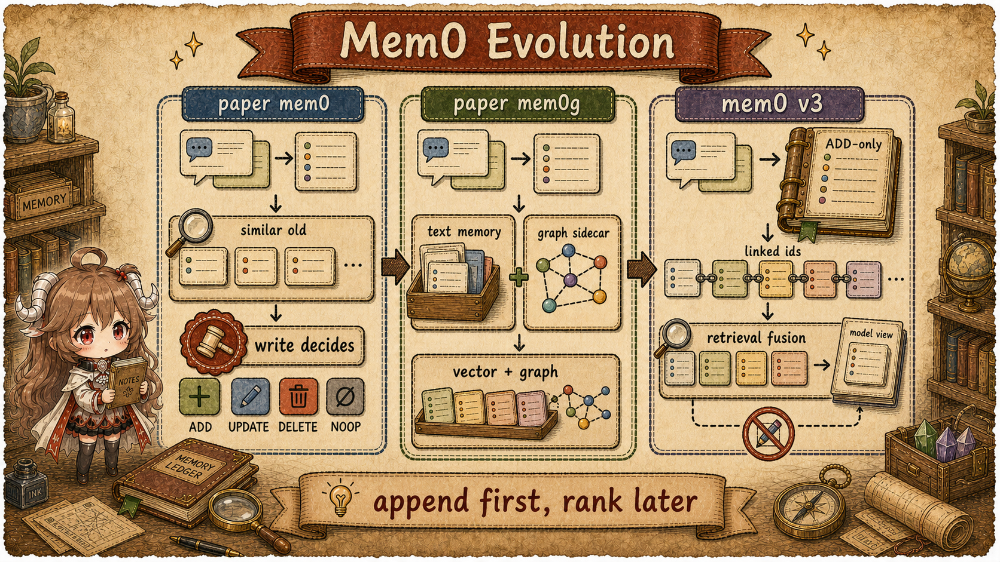
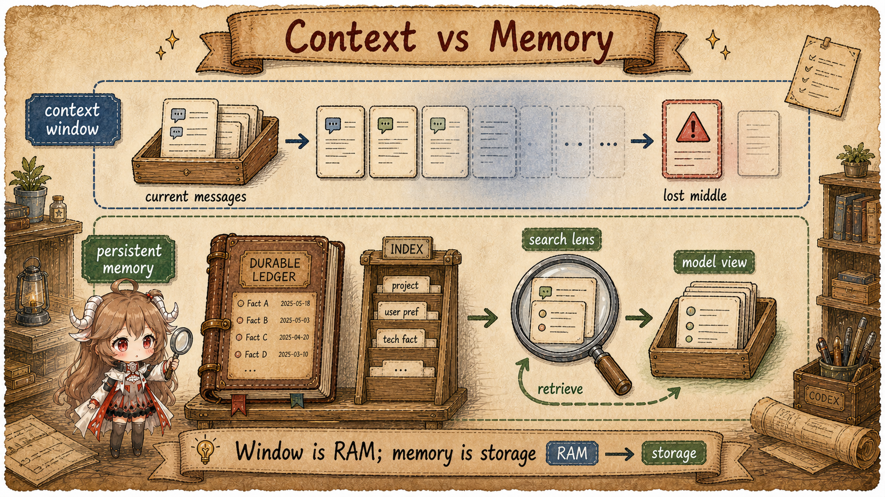
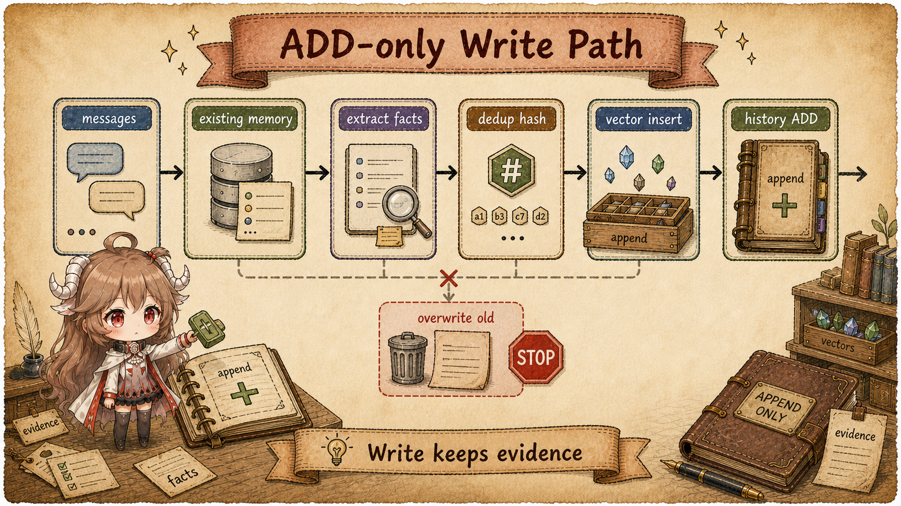
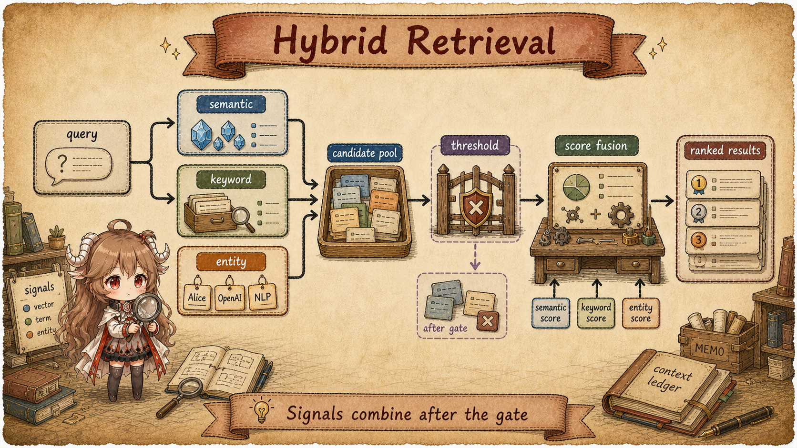
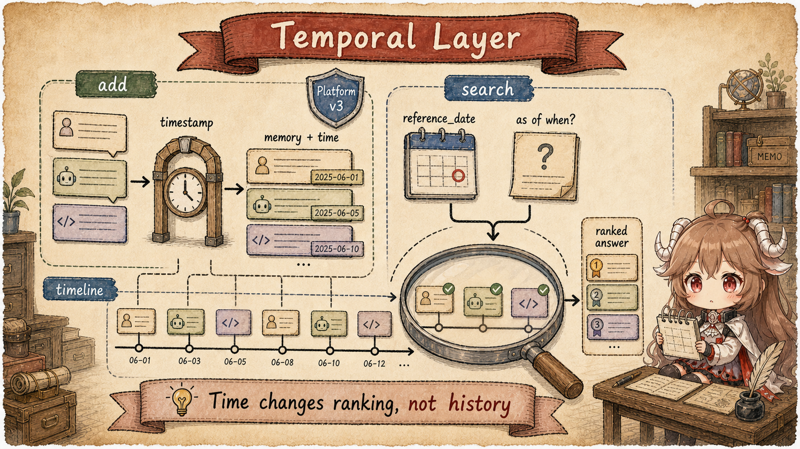
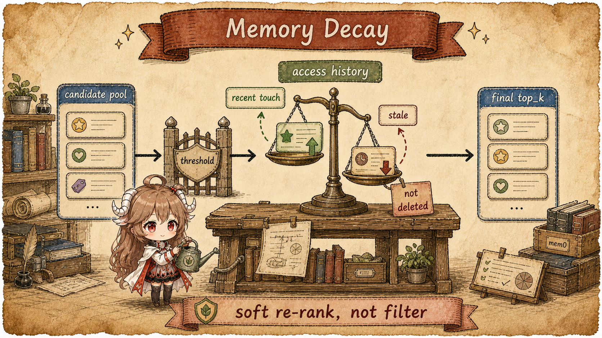
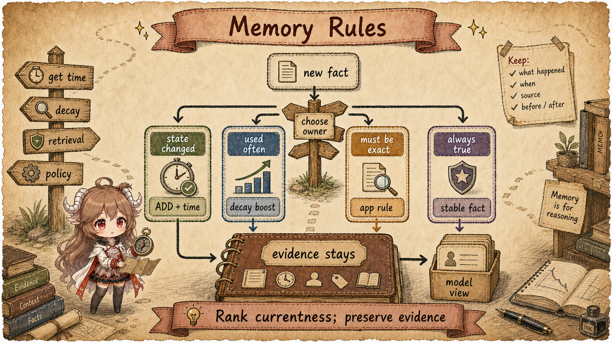

Start with a mundane long-term memory case. In January, a user says they prefer vegetarian restaurants. In March, they say they have started eating seafood. In June, they ask, "What kind of place did I usually choose for dinner with friends?" If the system stores only the last preference, it loses January's history. If it puts every remembered fact into the prompt, the model may treat an old preference as current. The case splits long-term memory into two questions: where history is preserved, and where "still true now" is decided.
In an application architecture, Mem0 sits between the app and the model. The app sends conversation, user scope, and agent scope into Mem0; Mem0 turns durable information into memory records; when the model answers, the app retrieves a small set of relevant memories and places them back into context. That position explains why it became a central memory-layer option for agents: teams do not have to stuff all history into the prompt or rebuild extraction, deduplication, and retrieval logic from scratch.
Several Mem0 posts circle the same boundary: the context window is closer to RAM than storage; a larger context window still does not replace persistent memory; and a memory file tends to mix evidence, preferences, temporary state, and retrieval policy. Together they point to one engineering stance: a memory layer is valuable because it separates preservation, retrieval, temporal interpretation, and ranking policy. Mem0 v3, Temporal Reasoning, and Memory Decay continue along that line.
Evidence boundary. This article separates four layers. The original Mem0 paper explains paper mem0 and mem0g. Mem0's official blogs and docs define the public Platform v3 contract. The public mem0ai/mem0 source explains the visible OSS and Python SDK paths. Platform service internals are not public, so Temporal Reasoning and Memory Decay are described as documented contracts, not as reconstructed server implementation.
Read the system with five questions in mind:
- Are the informal v1, v2, v3 labels the same as paper mem0 and mem0g?
- Why did paper mem0 ask the LLM to choose ADD, UPDATE, DELETE, or NOOP?
- What problem did mem0g solve with a graph, and what cost did that add?
- Why did v3 move toward ADD-only writes, entity linking, and hybrid retrieval?
- Where do Temporal Reasoning and Memory Decay place time and recent usage?
1. Start With the Algorithm Evolution
Two naming lines are easy to mix together. The paper talks about mem0 and mem0g; product and SDK migration material talks about the older v2 surface and v3 behavior. This article does not force them into an official "v1, v2, v3" sequence. It reads them as algorithmic tradeoffs: first keep a compact text-memory set with LLM-managed updates, then make entity relationships explicit with a graph, then simplify writes and move more selection work into retrieval and ranking. That route makes ADD-only, Temporal Reasoning, and Memory Decay easier to place.
| Name | Better Reading | Do Not Read It As |
|---|---|---|
| paper mem0 | The base paper algorithm: extract new memories, then choose ADD/UPDATE/DELETE/NOOP against similar old memories. | The official product "v1". The public materials do not name it that way. |
| paper mem0g | The graph-augmented paper algorithm: explicitly extract entities and relationships, then use a graph database. | The official product "v2". It is better read as a graph variant beside mem0. |
| v2 API / SDK | The older product surface in the migration materials: add could return ADD/UPDATE/DELETE events, with graph-memory options such as enable_graph and graph_store. |
Only mem0g. v2 is a product/API/SDK behavior set, not the paper algorithm name. |
| mem0 v3 | The April 2026 algorithm surface: single-pass ADD-only writes, built-in entity linking, hybrid retrieval, Temporal Reasoning, and Memory Decay. | A rename of mem0g. v3 changes writes, relationship handling, and retrieval ranking together. |

1.1 paper mem0: Extract First, Then Decide How to Edit Old Memory
The earliest mem0 path starts from a practical goal: the memory set cannot grow without bound, because retrieval and context injection become more expensive. Duplicate facts should be merged, and stale or wrong facts should leave the active memory set. The original paper puts that cleanup work inside the write path. Its input is not one user message; it sees a small conversation state: the latest user and assistant messages, the previous summary, recent turns, and existing memories. The simplified flow looks like this:
Input:
latest user message + assistant message
previous summary
recent m messages
existing memory store
Write:
1. LLM extracts k candidate memories from the new conversation
2. For each candidate, use embedding / vector similarity to retrieve m similar existing memories
3. LLM compares the candidate with similar old memories
4. LLM outputs ADD / UPDATE / DELETE / NOOP
5. Apply that operation to the memory store
Read:
query -> vector similarity -> top memories -> current prompt context
"Similar" has two separate jobs here. The first job is retrieval: the candidate is embedded, then compared with existing memory vectors
so the system can bring back old records worth checking. The second job is decision-making: those similar records are only candidates
shown to the LLM, not a rule that says a high similarity score must become UPDATE. The visible OSS
DEFAULT_UPDATE_MEMORY_PROMPT
frames this step as comparing newly retrieved facts with existing memory and choosing ADD, UPDATE, DELETE, or NONE.
NONE is the same no-op idea that the paper-level description and this article call NOOP.
| Relation between new fact and old memory | Expected operation | Intuition |
|---|---|---|
| The old memory does not contain this fact | ADD |
Old: user is a software engineer. New: user's name is John. |
| Same fact, different wording | NOOP / NONE |
Old: likes cheese pizza. New: loves cheese pizza. |
| Same subject or preference, but the new fact is more specific or the value changed | UPDATE |
Old: likes cricket. New: likes playing cricket with friends. |
| The new fact contradicts the old fact, or the user explicitly asks to remove it | DELETE |
Old: likes cheese pizza. New: dislikes cheese pizza. |
The benefit is compactness: related facts can be merged, and stale or wrong records can be removed.
But this is not a hard deduplication algorithm. If vector retrieval does not bring back the right old memory, or if the LLM treats
a repeated fact as new, the system can still duplicate an ADD. The cost comes from the same place.
The write path includes an old-vs-new decision, and UPDATE or DELETE
can weaken historical evidence. If the user later asks why a preference changed last year, the earlier version may no longer be available.
That raises the central question for long-term memory: should write consolidate history into a latest state, or should history be preserved first?
1.2 paper mem0g: Add a Relationship Graph Beside Memories
Mem0g handles a different pressure: text memories plus vector similarity are not great at representing who is connected to whom and how. It does not only maintain memory records. It also maintains a graph beside them.
Input:
conversation messages
existing memory store
graph store
Write:
1. Extract memorable facts from messages
2. Explicitly extract entities and relationships
3. Store memories in the vector store
4. Store entities and relationships in the graph database
Read:
query -> retrieve related memories
-> extract query entities
-> traverse related graph nodes and edges
-> merge text memory results with graph resultsThis makes multi-hop relationships more natural. If a user keeps switching between a company, a project, and a coworker, the graph is a cleaner way to connect those facts than isolated text records. The tradeoff is system complexity: graph storage has to be operated, entities need merging, relationships need updates, and retrieval has to combine vector results with graph results. A graph can express relationships, but it does not by itself answer which historical fact should be used for a time-sensitive question.
1.3 mem0 v3: Keep Writes ADD-only, Let Retrieval Decide What Applies Now
By v3, the pressure is not just "make writes faster." The paper mem0 write path behaves like a state judge: it extracts new facts and also decides whether old facts should be merged, overwritten, or deleted. Mem0g then adds entity and relationship maintenance on top of that. The problem is that many long-term memories are not simply true or false forever. A user may like A, then switch to B; "What do they like now?" and "Why did that preference change?" need different parts of the history.
The official v2-to-v3 migration docs and Token-Efficient Memory Algorithm post describe v3 as single-pass ADD-only. Read that as a shift in responsibility: write extracts new memory evidence, links it to related old memories, and inserts searchable records; retrieval, time, and decay signals decide which records should enter the current model view.
Input:
conversation messages
existing memories
optional timestamp
Write:
1. Use one LLM call to extract new memories
2. Do not UPDATE or DELETE old memories during extraction
3. Link related old memories with linked_memory_ids
4. Batch embedding + hash deduplication + vector insert
5. Record history ADD and run built-in entity linking
Read:
query -> semantic candidates
-> BM25 keyword signal
-> entity boost
-> time / decay signals
-> ranked model viewThe protected invariant is narrower: the write path avoids irreversible state judgment, and the read path chooses a small model view for the current question. Old records can still be deleted through other paths, and duplicates can still appear. That gives the later mechanisms their roles: write preserves evidence, retrieval orders candidates, Temporal Reasoning adds a time view, and Memory Decay adds a recent-use signal.
1.4 Separate Three Objects First: Window, Record, and Model View
ADD-only often raises a natural question: if history is preserved, does every old fact enter the prompt? The answer depends on three separate objects. The context window is the model's working area for the current request. A memory record is a durable fact that can be searched later. The model view is the small set of retrieved memories inserted back into the current request. ADD-only changes how memory records are written; Temporal Reasoning and Memory Decay change how the model view is selected. Neither one means the full history is pushed into the context window.

| Term | Meaning Here | Common Misread |
|---|---|---|
| context window | The current request working area for short-term reasoning and tool results. | Treating a larger window as durable memory while ignoring cost and lost-in-the-middle effects. |
| memory record | A persisted fact extracted from conversation, with payload, metadata, embedding, and history. | Treating the record as "current truth" instead of a fact that may have been true at a point in time. |
| model view | The small result set shown to the model after retrieval, filtering, and ranking. | Treating it as the whole memory store, so un-retrieved facts appear nonexistent. |
| ranking layer | The layer that turns semantic, keyword, entity, time, and usage signals into result order. | Treating ranking output as if old records had been overwritten. |
The Later Posts Are About Model View Quality
Mem0's BEAM benchmark post and memory simulation guide both point beyond simple recall. Production memory needs to handle stale facts, contradictions, time conditions, and retrieval drift. Temporal Reasoning and Memory Decay sit in that problem space: they keep history available while making "now", "then", and "recently reinforced" easier to distinguish.
2. Why the Write Path Is ADD-only: Remove State Judgment From Write
Preference changes show why write-time judgment is hard. January's "vegetarian restaurants," March's "started eating seafood," and June's question about past dinner choices can involve duplication, refinement, contradiction, and time perspective at once. If the write path immediately overwrites or deletes old facts, the current state may look cleaner, but later historical explanation gets harder. v3 first stores the evidence, then lets read decide what matters for the question.
Mem0's Token-Efficient Memory Algorithm
post frames v3 as ADD-only, and the public OSS path has the same shape:
Memory.add()
prepares inputs, filters, and metadata before calling
_add_to_vector_store().
In that visible path, the LLM extracts new memories, then the runtime batch-embeds them, deduplicates by hash,
inserts vectors, records history ADD events, and links entities.

| Pressure in the Older Route | ADD-only Handling | Advantage |
|---|---|---|
Write-time UPDATE / DELETE can be wrong |
New facts enter the memory store as new records. | Irreversible overwrite is reduced, and evidence remains explainable later. |
| The same preference can have different answers at different times | The transition itself can become a memory with time signal. | "Now" and "then" no longer compete for one overwritten record. |
| Graph relations add storage and maintenance cost | linked_memory_ids and built-in entity linking preserve relationships. |
Relationships remain available without forcing OSS users to operate an external graph store. |
| Longer write paths increase cost, latency, and failure surface | Single-pass extraction, batch embedding, hash deduplication, then insert. | The write path is shorter, and richer decisions move to retrieval. |
2.1 LLM Extraction Links Evidence; It Is Not the Final State Judge
Once write stops judging old facts, the LLM still has a narrower job: identify facts worth preserving,
connect them to related prior memories, and ground relative time against an observation date.
ADDITIVE_EXTRACTION_PROMPT
encodes that job: both user and assistant messages can carry information;
relative time must be grounded by the observation date; related prior memories are linked with linked_memory_ids,
rather than directly rewriting old records.
{
"memory": [
{
"id": "0",
"text": "User switched from almond milk to oat milk lattes after developing an almond sensitivity",
"linked_memory_ids": ["existing-memory-id"]
}
]
}This simplified example captures the key idea: the transition itself becomes a new traceable fact. The old preference is not silently deleted. Later retrieval can see both what used to be true and why it changed. That is more useful for long-running agents, because future questions may ask about history rather than only current preference.
2.2 The OSS Path Keeps a Hard Boundary Around Platform-only Time Fields
The next section discusses Temporal Reasoning, so the visible OSS path and the Platform contract have to stay separate.
Public OSS source shows ADD-only write and baseline retrieval. Platform v3 exposes the temporal fields.
Passing timestamp to OSS Memory.add()
raises a Platform-only error; passing reference_date to OSS Memory.search() does the same.
This is a real API boundary, not a missing local detail. Temporal Reasoning belongs to Platform v3, so the server-side ranking
behavior has to be discussed as an official contract, not as visible OSS implementation.
3. Why Retrieval Needs Fusion: ADD-only Moves Choice Into the Model View
ADD-only keeps more historical versions and related facts in the memory store. If read stayed as plain vector top-k, the system could confuse "semantically similar" with "should be used now." Old and new preferences may both be close to the query, but they answer different time views. So the selection removed from write has to happen when the model view is formed.
In OSS, search starts at
Memory.search()
and flows into
_search_vector_store().
The query is lemmatized and entity-extracted, embedded, semantically over-fetched, matched by keyword search, and boosted by entity links.
Those signals then flow into
score_and_rank().

3.1 Semantic Relevance Gates Before Keyword and Entity Fusion
Keyword and entity boosts are useful, but they should not replace basic relevance. Otherwise a frequently mentioned name
could push an unrelated memory into the model view. score_and_rank() protects that boundary:
candidates below the semantic threshold are removed before normalized BM25 and entity boost are added.
Keyword or entity signals can improve ordering, but they do not rescue a semantically unrelated candidate.
The threshold protects the basic relevance of the model view.
semantic candidates
-> threshold gate
-> add normalized BM25 when available
-> add entity boost when available
-> normalize by active signal budget
-> return top_k3.2 "Still Applies Now" Needs Time and Usage Signals
Once writes do not overwrite, reads have to handle conflict and recency. A user can like A, then switch to B. The memory store should usually keep both records because they answer different questions: "What is likely true now?" and "What changed, and when?" Pure vector retrieval mostly sees text similarity. Temporal Reasoning and Memory Decay add more signals for deciding whether a remembered fact still applies to the present question.
4. Temporal Reasoning: Give Retrieval a Time View
The previous section leaves a question: if old and new facts are both retained, how does search know which time point
the query is asking from? That is the role of Temporal Reasoning. It does not rewrite old records into new ones.
It lets write record when a fact was observed and lets search state the date from which the answer should be framed.
The Temporal Reasoning announcement
and docs define the public contract:
Platform v3 support, enabled by default; timestamp on add; reference_date on search;
and unchanged search result shape.

4.1 Request Shape: Observation Time and Search Time Are Separate
Return to the restaurant example. "Started eating seafood in March" is one observation;
asking in June about January habits is a different search perspective. If those two times are collapsed,
the system has to guess whether the newest fact should overwrite the older one. Platform requests separate them:
timestamp describes when the memory entered history, and reference_date describes the date from which this search should answer.
The Python Platform client posts add and search requests to v3 endpoints:
/v3/memories/add/ and /v3/memories/search/.
The visible source shows request shape and parameter forwarding. The server-side details of temporal ranking are not public.
# Platform shape, simplified
client.add(
messages=[{"role": "user", "content": "I switched to oat milk."}],
user_id="u1",
timestamp="2025-03-08T09:30:00Z",
)
client.search(
"What milk did I prefer in February?",
filters={"user_id": "u1"},
reference_date="2025-02-28",
)
The design point is not merely two extra fields. timestamp describes when the memory entered history;
reference_date describes the time perspective for this search. That keeps "what is true now" and
"what was true then" from competing for one overwritten record.
4.2 Temporal Handles Contradictory History; It Does Not Replace Filters
Filters answer "where should search look": user, agent, run, or business metadata. Inside the same user's history, February facts and March facts can still coexist. A temporal query interprets those time relationships inside the retained history. Questions such as "what changed in the last three months" and "what did I prefer last year" require multiple historical records, not one latest value.
5. Memory Decay: Use Recent Reinforcement to Rank, Not to Clean Storage
A time view is still not enough. A long-running agent can collect many facts that are relevant and not obsolete. If one kind of memory has been used repeatedly in recent interactions, it is often more useful in the current model view. That problem should not be solved by deleting old memories, because those old records may still matter for other questions. Memory Decay and the Memory Decay docs place this at search-time soft re-ranking. It does not delete memories or rewrite facts on write; it gently adjusts ordering after basic relevance has been established.

5.1 The Project Switch Changes Search-time Ranking
The public SDK exposes the project-level switch:
project.update(decay=True)
adds decay to the project update payload. The source comment also frames it as search-time ranking:
recently used memories are boosted, stale ones are gently dampened, and disabling the flag restores pre-decay behavior.
The service-side access history store and multiplier calculation are not visible in OSS.
# Platform project setting, simplified
client.project.update(decay=True)5.2 Key Boundary: Relevance First, Decay Second
Recent use should change the order among relevant candidates; it should not let unrelated facts cross the relevance gate.
If the user recently asked many reimbursement questions, those memories still should not enter a restaurant-preference query.
Decay's boundaries are designed around that risk: it applies to Platform v3; it works over a candidate pool larger than final top-k;
base relevance thresholding happens before the decay multiplier; public scores are clamped to the normal range; reinforcement is asynchronous.
The docs also give scale boundaries: the pool expands to top_k * 3 with a floor of 50, and the multiplier is clamped between 0.3x and 1.5x.
These details protect one invariant: decay is ranking bias, not fact deletion.
| Boundary | Meaning | Misread Avoided |
|---|---|---|
| search-time | Ranking is adjusted after candidates are retrieved. | Not a write-time rewrite of old facts. |
| threshold first | Basic semantic relevance gates the candidate before decay. | Frequent but irrelevant memories do not automatically enter results. |
| soft multiplier | Recent use moves records up; staleness moves them down. | Not TTL, and not automatic deletion. |
| project opt-in | The project setting enables decay. | Not every Mem0 usage has decay automatically enabled. |
6. Put the Layers Together: Old Facts Stay, New Questions Get a View
Return to the opening example. If a user's preference changes from A to B, simply overwriting A is too lossy. The system may need to answer "what is likely true now" or "when did the switch happen?" ADD-only preserves the evidence; hybrid retrieval builds the pool; Temporal Reasoning supplies the time perspective; Memory Decay lets recent usage influence result order.

6.1 When Mem0 Is Enough, and When the Application Must Own the Rule
Some information is a good fit for memory retrieval: user preferences, common tools, and long-running project context. Other information must be executed exactly: payment addresses, permission state, compliance switches, and medical contraindications. Those should be owned by application databases or explicit policy systems. Mem0 can help the model explain and retrieve context; it should not be the final authority for high-stakes state.
| Information State | Best Mechanism | Invariant Protected | Failure Boundary |
|---|---|---|---|
| Preference changed | ADD-only records the transition; temporal query supplies the time view. | Both "then" and "now" remain explainable. | Keeping only the latest value loses history; keeping only the old value answers current queries wrongly. |
| Recently reused context | Memory Decay softly re-ranks search results. | Frequently reinforced information is more likely to enter the current model view. | Decay does not replace business priority or hard policy. |
| Must be exact | Application database, permission system, or explicit rule. | Probabilistic retrieval does not decide high-risk state. | Authorization, payment, or medical decisions should not be owned by memory search. |
| Stable long-term background | Ordinary memory record plus hybrid retrieval. | Repeated questions decrease while personalization remains available. | Without proper filters, user or agent boundaries can blur. |
6.2 The Short Version of Mem0's Route
Mem0's useful lesson is not "make memory a bigger prompt." It is the separation of responsibilities: the write path preserves evidence, retrieval builds the candidate set, temporal reasoning frames history, decay expresses recent use, and the application owns hard-consistency rules. With that separation, an agent does not have to choose between overwriting old memory and showing all history forever.
Sources
- Mem0 docs: Introduction
- Mem0 paper: Building Production-Ready AI Agents with Scalable Long-Term Memory
- Mem0 docs: OSS v2 to v3 migration
- Introducing the Token-Efficient Memory Algorithm
- Introducing Temporal Reasoning in Mem0
- Mem0 docs: Temporal Reasoning
- Introducing Memory Decay in Mem0
- Mem0 docs: Memory Decay
- Memory vs Context Window for LLM and AI Agents 2026
- Context Window vs Persistent Memory
- Your AI Agent's Memory Is Just a File? That's the Problem
- Why BEAM Is a Good Memory Benchmark for AI Agents
- How to Test AI Agent Memory with Mem0
- mem0/memory/main.py:
Memory.add() - mem0/memory/main.py:
_add_to_vector_store() - mem0/memory/main.py:
Memory.search() - mem0/memory/main.py:
_search_vector_store() - mem0/utils/scoring.py: hybrid scoring
- mem0/client/main.py: Platform memory client
- mem0/client/project.py: project settings
- mem0/configs/prompts.py: additive extraction prompt